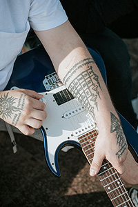

About the Band
Hailing from the heart of the early 2000s pop-punk scene, Broken City Saints is a band that blends raw energy, catchy hooks, and heartfelt lyrics with a sense of camaraderie that only true friends can achieve. Formed by a group of lifelong friends, the band emerged from the streets of their hometown with a shared love for punk rock and a desire to create music that felt real, rebellious, and fun. From the first strum of their guitars to the last crash of the cymbals, Broken City Saints exude a sense of authenticity and unity that sets them apart. Their sound is a nostalgic nod to the glory days of pop-punk, mixing infectious melodies with fast-paced rhythms and lyrics that speak to the highs and lows of youth, friendship, and everything in between. Whether they're playing in small dive bars or on bigger stages, the band's connection with each other and their fans is always palpable, and it’s this bond that has helped them build a loyal following.With tracks that combine anthemic choruses and thoughtful verses, Broken City Saints create a soundtrack for anyone who's ever felt misunderstood, ready to take on the world, or simply looking to have a good time. From their formation to their rise through the ranks of the punk scene, they’ve always remained grounded in the simple belief that friendship and music can change everything. If you’re looking for a band that feels like home, sounds like freedom, and never forgets where they came from, Broken City Saints is the band you’ve been waiting for. The Saints aren't just a band—they're a brotherhood, and their music will make you feel like part of the family.
Tour Date Info
Get ready to join Broken City Saints on an unforgettable journey across the US and Canada! With high-energy pop-punk anthems, raw emotion, and the camaraderie of true friends, the band is hitting the road for an exciting tour that will bring their explosive sound to fans everywhere. Don’t miss out on a night of wild shows, crowd sing-alongs, and pure punk rock energy!
Available now! View tour dates and get your tickets before they sell out at brokencitysaints.com/tour. Follow Broken City Saints on social media for announcements, VIP meet-and-greet packages, and behind-the-scenes updates from the road.